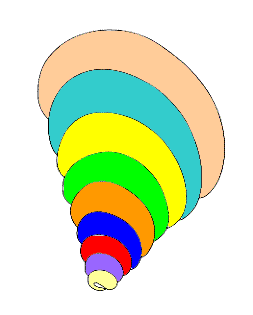
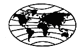
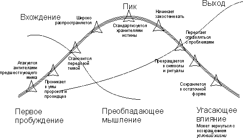
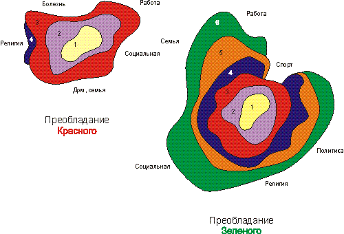

Спиральная Динамика Грейвза. Принципы Спиральной Динамики.
|  |
|
Развивая концепции иерархии человеческих потребностей А. Маслоу, во второй половине прошлого века выдающийся психолог К.Грейвз, обработав огромное количество экспериментальных и статистических данных, сформулировал удивительную модель системы человеческих ценностей. Его работы были развиты Доном Беком и Кристофером Кованом, которые построили на их основе целое новое направление в социопсихологии, которую они назвали «меметика» или Спиральная Динамика. В настоящее время Спиральная Динамика захватывает живой интерес не только ученых, но и политиков, бизнесменов, педагогов и др., которые находят ее удобным инструментом для анализа и решения многих практических задач, связанных с управлением и обучением. В России эта тема практически не знакома. Поэтому мы будем рады изложить здесь основные концепции Спиральной Динамики, приведя переложение на русский язык некоторых глав из книги Д.Е.Бека и К.К.Кована “ Spiral Dynamics – Mastering Values, Leadership, and Change. |
Основные характеристики мемов
Сначала мы опишем характеристики тех невидимых глубинных образов мышления (мемов), которые часто неосознаваемо влияют на людей. Затем мы заглянем в законы, правила и принципы, которые влияют на сдвиги, развитие и внутреннюю организацию в этих развивающихся способах бытия.
Мем проявляет себя в виде мировоззрения, системы ценностей, уровня психологического существования, структуры убеждений, организующих принципов, способа мышления и образа жизни.
Мемы обладают следующими качествами:
1. Мемы проявляют глубинные образы мышления, которые формируют системы и влияют на поведение человека: мем содержит в себе базовый пакет мыслей, мотивов и инструкций, которые определяют то, как мы принимаем решения и расставляем приоритеты в жизни. Каждый из нас имеет свой собственный входной и передающий каналы, способы организации, уровень интенсивности, правила поведения, и набор предположений относительно того, как устроен мир.
Мем занимает ум человека практически подобно тому, как паразит проникает в тело, и перестраивает нейрологическую систему так, чтобы она удовлетворяла его образу мышления. У каждого из них есть направления, в которых они делаются хищными и экспансивными или пассивными и склонными к сотрудничеству. Все они содержат антитела, чтобы отражать атаки конкурирующих мемов.
Мемы формируют наши основные жизненные приоритеты, которые, в свою очередь, на более поверхностном уровне, влияют на наше поведение и решения. Внешне люди могут делать одно и то же, однако ими будут двигать совершенно различные мемы. Невозможно определить, какой мем в настоящий момент функционирует, только наблюдая поведение – что человек делает. Только поняв, почему человек делает или говорит определенные вещи, мы придем к мему. Недобросовестный тип может пытаться убедить вас, что он говорит, основываясь на очень чувствительном Зеленом меме, в основе которого – благо человека и социальные задачи, в то время как им могут двигать очень корыстные формы Оранжевого мема, который хочет заставить вас расплатиться, поддержав его «благотворительное» мероприятие.
Вот краткий обзор восьми базовых мемов, которые уже проявились к настоящему времени.
| мем | Название | Базовые мотивы |
|---|---|---|
| Бежевый | Выживание | Остаться в живых, благодаря физическим инстинктам |
| Фиолетовый | Мистика | Родственные связи и мистицизм в волшебном и опасном мире |
| Красный | Власть | Эгоистическая и эксплуататорская власть над собой, другими и природой |
| Синий | Закон | Абсолютная вера в единственно верный путь и покорность авторитету |
| Оранжевый | Амбиции | Стремление к лучшим возможностям для себя |
| Зеленый | Взаимоотношения | Благополучие людей и консенсус |
| Желтый | Гибкость | Гибкая адаптация к переменам благодаря системному видению |
| Бирюзовый | Глобальность | Внимание к глобальной динамике, и действиям на макро-уровне |
| Коралловый | Развитие | Глобальное развитие цивилизации |
2. Мемы влияют на все выборы, которые мы совершаем по жизни. мемы – это самоорганизующие сущности, которые проявляются в согласованных стереотипах, охватывающих буквально все сферы нашей жизни. Подобно могущественным вирусам, они могут прикрепляться к тем идеям, людям, объектам и организациям, которые позволяют им воспроизводить себя и излучать их базовые послания. Каждый содержит свои собственные концепции религии, политики, семейной жизни, образования, душевного спокойствия, работы и управления, социального устройства и законопорядка. Один и тот же мем может пронизывать и стадионы, и СМИ, и законодательные собрания, и офисы, и соборы и классные комнаты.
мемы действуют подобно магнитным полям, которые связывают объекты или побуждают их отталкиваться. Расовые деления часто обуславливаются различиями мемов. Церкви раскалываются, когда в части их последователей пробуждаются новые мемы. Серьезные сдвиги мемов происходят в бизнесе, вызывая сильные пертурбации и потребность в реструктуризации. Современная эпидемия «разбитых семей» – в большей своей части производная смены мемов.Хорошо утвердившийся мем будут окружать сильные и развитые структуры, и перед тем, как сможет прийти и вырасти новый мем, часто могут потребоваться болезненные процессы их разрушения В таком состоянии находятся страны, переходящие от Марксизма к рыночной демократии, государственные структуры, переходящие к приватизации и диктатуры, находящиеся на гране теократии.
мемы живут независимой жизнью. Они обладают способностью устраивать религиозные гонения, изучать космическое пространство, создавать угрозу нашему месту обитания, или выступать за права человека. Никакая сила на земле не может остановить мем, чье время пришло – ни призывы СМИ, ни военная сила, ни резолюции ООН.
3. Мемы могут проявлять и здоровые и нездоровые качества. Сами по себе мемы не хорошие, не плохие, не здоровые, не нездоровые, не позитивные, не негативные. Например, один и тот же мем может проявляться в виде мистических откровений, фантазий в духе Диснея или ритуалов каннибализма. мем, который направляет воображение и преданность миллионов на благородные дела и придает их жизням смысл и порядок, может обусловить других рамками военного фанатичного религиозного или этнического терроризма.
Здоровые мемы – это те, которые позволяют или даже способствуют позитивному выражению других мемов эволюционной сп ира ли, даже если те конкурируют с ними за влияние. Часто мемы становятся злокачественными, утрачивая внутреннюю систему регуляции, которая говорила бы им, когда следует перестать расти. Иногда мемы становятся ограниченными, замкнутыми и репрессивными, навязывая умонастроение чрезмерной опеки.
4. Мемы – это структуры мышления. мем определяет, как люди мыслят или принимают решения, в отличие от того, во чем они убеждены или что ценят. Это «схемы», в рамках которых могут находиться разные «темы». Два апологета разных религий будут иметь одни и те же мемы. Это конфликт содержимого, нежели чем глубинных образов мышления. Другие примеры – это конфликты преступных группировок, соперничество между Республиканцами и Демократами или борьба руководством компании и профсоюзами.
Конфликты между мемами происходят, когда они пересекаются в ограниченном пространстве, физическом или концептуальном, – с тем завоевать влияние на одних и тех же людей. Например, конфликт между Оранжевыми, светскими западными ценностями и Синими идеологизированными восточными; противостояние технологического Оранжевого общества и Зеленого экологического движения; вторжение Оранжевой экспансивной цивилизации в Фиолетовую племенную жизнь американских индейцев.
5. Мемы могут разгораться и тускнеть по мере изменении условий жизни. мемы обладают сильными кибернетическими способностями (воспринимать обратную связь и приспосабливаться) и имеют тенденцию сохранять свои глубинные образы мышления и распространять свое влияние на любой благодатной территории. У каждого есть регулятор, который позволяет ему усиливать или уменьшать свои проявления, под диктатом внутренних «ДНК» или меняющихся внешних условий жизни. мемы – это не какие-то жесткие, неподвижные структуры. Они могут адаптироваться, менять интенсивность, точки приложения и поля деятельности, пронизывая, иногда со скоростью лесного пожара, целые сообщества, континенты и профессии. Вчерашний Красный рецидивист становится Синим апологетом религиозного учения. Зеленый хиппи возвращается к Оранжевым прагматическим ценностям своих родителей. Синим нормам социалистической нравственности приходят Оранжевые ценности капиталистического общества.
Часто в различных подразделениях одной и той же компании действуют различные мемы, которые часто сталкиваются на общих совещаниях буквально по всяким пустякам. Возможно у вас есть друг, который проходит через болезненный сдвиг мемов в семейной или личной жизни. Сокращение часто приводит к сдвигу мемов, поскольку те, кто остаются в компании, испытывают чувство вины. Многие усилия по крупномасштабным переменам оканчиваются неудачей, поскольку они полностью игнорируют якоря мемов, которые вызывают сопротивление людей.
Однако что из себя представляет динамика, определяющая поведение соответствующих мемов? Есть ли здесь какие-то закономерности, или же это случайный результат независимых проявлений мемов? Посмотрите на следующие характеристики:
Бежевый. Если мышление автоматическое, то структуры – это свободные группы, а процессы – это выживание
Фиолетовый. Если мышление анимистическое, то структуры будут племенными, а процессы – круговая порука
Красный. Если мышление эгоцентрическое, то структуры будут империями, а процессы – эксплуататорскими.
Синий. Если мышление абсолютистское, то структуры будут пирамидальными, а процессы – авторитарными
Оранжевый. Если мышление множественное, то структуры будут делегирующими, а процессы – стратегическими
Зеленый. Если мышление релятивистское, то структуры будут уравнительными, а процессы – консенсуальными
Желтый. Если мышление системное, то структуры будут интерактивными, а процессы – интегрирующими
Бирюзовый. Если мышление холистическое, то структуры будут глобальными, а процессы – экологическими
Принципы Спиральной Динамики
Принцип 1: Люди обладают способностью создавать новые мемы
Ключевым моментом в концепции спиральной динамики Грейвза является то, что люди обладают внутренней способностью существовать на различных уровнях психологического развития, и даже добавлять новые уровни. Это не какие-то «лучшие» или «худшие» состояния – они просто отражают различные взгляды на то, что из себя представляет мир, и сложность его устройства. Это подтверждается и последними находками в области нейрологических исследований.
В соответствии с ними, для того, пробуждение новых функций мозга/сознания обусловлено тремя факторами:
* Наследственные факторы, обуславливающие добавление и даже замену старых систем на новые
* Динамические силы, генерируемые под влиянием окружения и воспитания, «запускающие» соответствующие системы
* Способность мозга/сознания человека оперировать одновременно в рамках нескольких подсистем, некоторые из которых активны, а другие – относительно пассивны
Принцип 2: мемы пробуждаются в результате изменений условий жизни, в результате чего мемы будут зарождаться, развиваться, или угасать
Мемы являются продуктом взаимодействия внутреннего устройства нашего сознания с условиями жизни, с которыми мы сталкиваемся. Возникновение мемов не является чем-то вроде станций, на которых с неизбежностью раньше или позже останавливается поезд. Они не являются чем-то запрограммированным биологией человека. Напротив, динамика Спирали активируется взаимодействием между внутренним состоянием сознания и внешним миром. Если определенные внешние условия становятся регулярными или повторяющимися, то это порождает возникновение соответствующих стереотипов поведения/мышления. В противном случае они исчезают.
Существует четыре важных аспекта этих условий жизни: Время, Место, Задачи и Контекст.
Историческое Время: Положение на общей линии развития человечества, стадия развития конкретной культуры, возрастные фазы жизни индивидуума.
Ключевые понятия: Эпохи, поколения, периоды, циклы, даты, временные рамки, личная история, фазы, ощущения прошлого/настоящего/будущего.
В любой момент хронологического Времени и практически в любом сообществе можно найти людей, живущих в одном и том же году, но чье мышление уходит корнями в совершенно различные эры. В любой данный момент своей жизни вы живете с уникальным пакетом мемов, развившимся в соответствии с этим Временем и культурой, его окружающей. Для многих людей Западной культуры 1940-е очень сильно отличались от 1950-х, 1960-х, 1990-х или 2000-х. Однако для некоторых стран Третьего Мира Время оставалось практически неизменным на протяжении многих поколений.
Когда течение Времени действительно изменяет внешние условия, стресс настолько пробуждает наши внутренние ресурсы, что в ответ мы можем добавить новые (или реорганизовать старые) мемы. Такое последовательное наслоение адаптирующихся образов мышления человека подобно годовым кругам дерева. Каждое кольцо отражает окружающие условия в течение года. Смена «сезонов» в жизни человека оставляет кольца в системе мемов, проявляющиеся в культуре и психосоциальном развитии. То, кем вы являетесь сегодня, были вчера и будете завтра, в большой части формируется условиями, с которыми вы сталкиваетесь на разных этапах своей жизни. Мы не являемся узниками своего Времени, но несомненно подвержены его влиянию.
Географическое Место: Физические условия, естественная и искусственная экология, в котором находится индивидуум или группа.
Ключевые понятия: Атмосферные условия, электромагнитные воздействия, природное окружение (снега, пустыня, джунгли, город, деревня), архитектура, плотность населения, количество и особенности внешних стимуляторов, химический и минеральный состав воздуха, почвы и пищи, источники и виды освещения, климат.
Существует множество факторов в нашем географическом месте расположения, сильно влияющих на наши социальные ценности и взаимодействия. Жизнь на изолированном острове порождает виды коллективного поведения отличающиеся от поведения кочевого племени или культуры, развившихся в теплой, плодородной долине.
Факторы географического окружения включают в себя все, начиная от разнообразных природных влияний (геомагнитные поля, топография, небо, погода, сезоны и т.д.) до искусственного окружения – комнат, рабочих мест, зданий, городов и жизненного пространства. Это перекликается с китайским Фен-шуем, описывающим процесс гармонизации людей с их окружением. Так древняя мудрость перекликается с современными «открытиями».
Человеческие Задачи: Приоритеты, потребности, заботы и требования к бытию, предъявляемые конкретным индивидуумом или группой, некоторые из которых являются общими для всех людей, а некоторые уникальны для конкретной культуры, социальной группы или личности.
Ключевые понятия: Задачи выживания, такие как пища и вода; доступность и богатство/скудость социальных ниш; воспринимаемые уровни угрозы или безопасности; культурные нормы и требования; коммуникации и языки; преобладающие темпераменты; герои и антигерои; технологии; социальная память прошлого; неразрешенные исторические проблемы; образы и наследие прошлого; болезни и эпидемии; социальные перевороты.
Подобные задачи бытия запускают механизмы в человеческом мозге/сознании, которые 1) позволяют более точно воспринимать окружающие условия и 2) высвобождают физические и психологические ресурсы, чтобы должным образом справляться с ними. Каждый базовый мем Спирали предназначен для решения своего уникального набора задач. Когда несколько мемов возникают одновременно в одном и том же месте, уровень конфликтов и неурядиц соответственно возрастает. Многие из сегодняшних «горячих точек» подогреваются не только трениями между различных мемов, но и проблемой конкуренции за ограниченные ресурсы.
Социальный Контекст (Окружение): Положение индивидуума, группы и культуры в иерархии власти, статуса и влияния.
Ключевые понятия: Социальные роли; положение в потоке ресурсов; социоэкономический класс; уровень образования; возможности и доступ к определенным нишам; внешний вид и физиогномия; динамика взаимоотношений; политические системы; родословная; национальные, возрастные и половые факторы.
Никакие два человека не будут находиться в одинаковом Контексте, даже находясь в одном и том же Месте в одно и то же Время и решая схожие Проблемы. Уклады жизни, социальное положение, наследственность, семейные привилегия, интеллектуальные или физические способности, и просто удача будут различаться. То же самое относится к любой данной группе или социальному слою. Нравится нам это или нет, эти неравные условия жизни имеют значительное влияние на человеческую жизнь. Никакие два человека не будут воспринимать окружающих мир одинаково. Даже близнецы будут различаться. С очевидностью, многое из того, что происходит в политике, религии и терапии, тесно связано с этим аспектом Спирали.
Контекст определяет для нас границы – открытые или закрытые. Их необходимо учитывать при взаимодействии, как с «большинством», так и «меньшинствами», преуспевающими и неуспешными. Контекст может быть фильтрам, не дающим нам видеть всю Спираль так же, как мог бы кто-нибудь другой. Как и другие три элемента условий жизни, Контекст также диктует, какие мемы, вероятнее всего, будут приемлемыми и оправданными в данном контексте. Разногласия относительно эффективных систем образования, трудовых взаимоотношений и совместного проживания – связаны с различными Контекстами.
Подведем итог описанию условий жизни (Время, Место, Задачи, Контекст):
| ...если условия жизни очень... | ...то «нормальные» люди будут... |
|---|---|
| Бежевые – природные | Вести себя подобно животным |
| Фиолетовые – мистические и непонятные | Ублажать духов и объединяться вместе ради безопасности |
| Красные – жесткие и опасные, как в джунглях | Бороться за выживание, не думая о других |
| Синие – направляемые высшей силой | Слушаться высшего авторитета и хранить веру Истине |
| Оранжевые – полны практических возможностей | Прагматически стремиться завоевать преимущество и преуспеть |
| Зеленые – подчеркивают общее во всех людях | Присоединяться к сообществу, чтобы расти вместе |
| Желтые – сложные, чреватые распадом к хаосу | Учиться оставаться свободными, но также жить в соответствии с принципами |
| Бирюзовые – подобны единому организму | Искать порядка в кажущемся хаосе на Земле |
Краткий обзор мемов
-
От менее сложного К более сложному природного, технологического и социального окружения.
-
От выживания в джунглях К «серфингу» в Интернете и за его пределами посредством пробуждения новых способов мышления и сознания.
-
От маленького клочка земли К «глобальной деревне» и кибер-пространству посредством межтерриториальной и информационной миграции.
Первый уровень – «мемы потребностей»
-
Использует инстинкты и привычки, просто чтобы выжить
-
Индивидуальное Я слабо проявлено
-
Приоритеты: Пища, Вода, Кров, Секс и Безопасность
-
Формирует группы выживания для продления жизни

-
Повинуется желаниям духов и мистическим знакам
-
Проявляет верность «главному», старшим, предкам и клану
-
Охраняет священные объекты, места, события и воспоминания
-
Соблюдает ритуалы, связанные с этапами жизни, временами года и племенными обычаями

-
Мир – это джунгли, полные опасностей и хищников
-
Вырывается на свободу от любого доминирования или принуждений, чтобы делать все, что пожелаешь
-
Возвышается надо всеми, ожидает внимания, требует уважения и всеми командует
-
Наслаждается «на полную» прямо сейчас – без чувства вины или угрызений совести
-
Покоряет – силой или обманом – и доминирует над другими агрессивными персонажами
-
Человек жертвует собой ради трансцендентной Миссии, Истины или праведного Пути
-
Закон предписывает правила поведения, основанные на вечных, абсолютных принципах
-
Праведная жизнь дает стабильность в настоящем и гарантирует награду в будущем
-
Импульсивность обуздывается чувством вины; каждый имеет свое место
-
Законы, предписания и дисциплина формируют нравственные качества и силу характера
-
Перемены и прогресс – неотъемлемый атрибут природы вещей
-
Прогресс через изучение секретов природы и поиск наилучших решений
-
Манипулировать ресурсами Земли, чтобы создать и распространять изобилие в жизни
-
Оптимистичные, идущие на риск и самодостаточные люди заслуживают своего успеха
-
Основой процветания общества является стратегия, технология и конкуренция
Основная тема: Искать мира в глубине души и вместе с другими развивать узы в сообществе.
Характерные убеждения и действия:
- Дух в человеке должен быть свободен от жадности, догмы и сепаратизма
- Эмоции, чувствительность и забота главенствуют над холодной рациональностью
- Распределять ресурсы земли и возможности равно среди всех
- Достигать решений через процессы примирения и консенсуса
- Освежать духовность, привносить гармонию и обогащать человеческую среду обитания
Где наблюдается: Музыка Джона Леннона, роджерианская психология, Всемирный Совет Церквей, Грин Пис, шведский социализм, права животных.
Второй уровень – «мемы бытия»
Желтый мем – Интеграция – 7-е Пробуждение

Основная тема: Жить полной и ответственной жизнью в соответствии с тем, кто ты есть, и кем ты учишься стать.
Характерные убеждения и действия:
- Жизнь – это калейдоскоп естественных иерархий, систем и форм
- Величие бытия имеет большую ценность, чем объекты материальной собственности
- Гибкость, спонтанность и функциональность имеют высший приоритет
- Знание и компетентность должны главенствовать над званием, властью, статусом
- Различия можно интегрировать во взаимозависимые, естественные потоки
Где наблюдается: Астрономия Карла Сагана, обучающиеся организации Питера Сенге, Тотальное Качество Деминга, теория хаоса, экоиндустриальные парки, «новая физика» Ф.А. Вольфа
Бирюзовый мем – Целостность – 8-е Пробуждение

Основная тема: Ощущать целостность бытия – разумом и духом.
Характерные убеждения и действия:
- Мир – это единый, динамичный организм, обладающий коллективным разумом
- «Я» – обладает уникальностью, и вместе с тем является частью большего, «сострадательного» целого
- Все связано со всем остальным в единые экосистемы
- Энергия и информация целиком пронизывают атмосферу Земли
- Ожидает холистического интуитивного мышления и деятельности в духе сотрудничества
Где наблюдается: «глобальная деревня» Мак Лухана, идеи Ганди, философия Кена Уилбера, концепции Вернадского, ноосфера Теяра де Шардена.
Принцип 3: мемы движутся зигзагом между темами Самовыражения и Самопожертвования
Спиральная динамика происходит маятниковыми движениями между фокусом на «я» и заботой о «мы». Таким образом одно семейство мемов обозначается теплыми цветами (Бежевый, Красный, Оранжевый, Желтый). Это мемы Самовыражения, ориентированные на «я». Другая группа обозначается холодными цветами (Фиолетовый, Синий, Зеленый, Бирюзовый), и это мемы Самопожертвования, ориентированные на «мы».
Индивидуумы и общества склонны притягиваться от одного полюса этого «магнита» к другому. Всякий раз, когда этот человеческий «маятник» приближается к максимальному отклонению от положения равновесия, это порождает новые условия жизни с задачами, решить которые способны мемы другого полюса. Если проблемой становится слишком сильная ориентация на «я», то для восстановления равновесия потребуется та или иная форма ориентации на «мы». Если в избытке «мы», то появляется потребность в высвобождении какой-то степени «я».
Когда маятник начинает идти вниз, наше сознание активирует механизмы, способные обрабатывать послания, связные с грядущим семейством мемов. Сдвиг в направлении к Общинному/Коллективному «поиску внутреннего мира » требует подобного радару инструмента, который бы улавливал, усиливал и адекватно реагировал эти внешние послания, чтобы обеспечивать согласие. Сдвиг к Индивидуальному/Элитному «движению против и обретению контроля» требует внутреннего «гироскопа», компаса, необходимого для исследования новых территорий, плавания по неизвестным водам и разрыва с безопасностью, создаваемой традицией.
Индивидуальное/Элитное семейство мемов сосредоточено на внешнем мире (вне себя) и том, как обрести над ним власть, научиться пользоваться им, изменить его. Контроль локализован в «атомарном» индивидууме, стремящемся склонить вещи в своем направлении. Самовыражающие системы, которые оно формирует, более свободно организованы, менее связаны, более склонны к переменам, больше готовы идти на риск и заметно увеличивают степень свободы в нашем поведении. Они стремятся разрушить оковы, чтобы расширить горизонты, но они также и расковывают звенья, удерживающие вместе части единых структур. По мере роста чувства индивидуальности и независимости, возникают требования личных прав и свобод, поощрений и прерогатив, и власти для «каждого». Девиз этого семейства: «Я капитан своей судьбы... властелин своей души».
На другом полюсе живет радаро-подобное семейство Общинных/Коллективных мемов. В этой зоне самопожертвования контролем наделяется нечто более могущественное, чем любой индивидуум – родственники, объединяющая Высшая Сила, община взаимных интересов или жизненная система Земли. Однако, подобно тому, как Самовыражающаяся группа сосредотачивается на изменении внешнего мира, глубинные заботы жертвующего собой человека лежат глубоко внутри – усилия понять, кто я, откуда и зачем, и обрести в этом душевный покой. Из-за подобного акцента стиль мышления в этой группе мемов более склонен быть более консервативным и ориентированным на сохранение статус-кво, поиска порядка. Общинная/Коллективная энергия создает консолидацию, принятие внешнего мира таким, как он есть и жертву немедленных личных интересов ради высшего интереса соответствующей группы. Хотя при продвижении в эти области Спирали и происходит некоторое расширение концептуального пространства, больше энергии уходит на построение надежных структур, поиску стабильности и привнесению единой согласованности в жизнь – «Долг, Честь, Страна...»
мемы теплых цветов делят окружающих на иерархии. Бежевый – кто быстрее бегает или выше прыгает. Красный – власть. Оранжевый – статус. Желтый – знания и компетентность. Холодные мемы собирают людей в группы с плоской структурой, уравнивают окружающих и перераспределяют ресурсы. Для Фиолетового – это родственники. Для Синего – это община верующих. Для Зеленого – это сообщество людей с общими интересами и чувствительными моментами. Подобная динамика придает цикличность Спиральному развитию.
Принцип 4: мемы возникают на Спирали подобно волнам
Пробуждение новых мемов при спиральном движении происходит после того, как накапливается достаточная энергия для перехода к следующей системе – обычно вверх по спирали, но иногда и вниз. Хотя такой сдвиг может выглядеть случайным и хаотичным, тем не менее незамечаемые движения происходили под поверхностью на протяжении всего предшествующего времени.
Новые системы мемов накатываются подобно волнам на пляже. У каждой есть свой гребень, стремящийся овладеть новыми условиям жизни в этом мире. В то же время каждая накладывается на предшествующую, уходящую систему. Иногда результат такой интерференции в целом замедляет движение вдоль Спирали и даже обращает его. Иногда же волны мемов входят в резонанс и усиливают друг друга, ускоряя эволюцию мышления.
Каждая волна несет с собой семена своего рождения и смерти, остатки с предшествующих, затухающих систем и первые отблески грядущих способов бытия. Активная жизнь мема состоит из трех фаз:
- Вхождение: Когда мем начинает пробуждаться, происходит подготовительный период и накапливается энергия. Это включает первоначальное формирование и оттачивание системы, а также период «Эврики!» – открытий и исследований. Это, можно сказать, возрастающий отрезок синусоиды.
- Пик: Затем приходит интервал динамического напряжения и кажущейся стабильности в районе максимума. Условия жизни и мем синхронизированы, согласованы и уравновешивают друг друга. Конечно, в реальности все не так упрощенно, но это удобно принять в качестве модели.
- Выход: За этим интервалом кажущейся стабильности следует период дезинтеграции, смутные времена, когда система становится разбалансированной и неэффективной, так как новые возникающие проблемы выходят за рамки ее способностей. Теперь мы находимся на скользком отлоге, и если обладаем внутренним потенциалом и ресурсами, готовимся к следующей волне.

Жизненный цикл мема
Спиральная динамика это всегда процесс в процессе, но здесь нет никаких гарантий движения или изменений. Ни изменение, ни поддержание статус кво не являются правилом. Если присутствует дисбаланс и нарушение динамического равновесия, изменения происходит. Если нет – нет.
Принцип 5: Движение по Спирали происходит параллельно с изменением уровня сложности
Развитие по Спирали происходит от меньшего уровня сложности к большему; от образа жизни, необходимого для решения одного набора проблем, до образа жизни, существенного для решения более сложных проблем следующего уровня условий жизни. Выживают те, кто «вписываются» в эти условия, чего бы это не требовало, а не обязательно «самые достойные» – будь то в физическом, интеллектуальном или эмоциональном планах.
Мы не хотим сказать, что каждый индивидуум или группа в социальной системе будет находиться на одной фазе развития. В действительности, многие будут упорствовать в неадекватном поведении, злонамеренном, дисфункциональном и уменьшающим шансы общества выжить в новых условиях жизни. Просто то, что кто-то обладает властью, не дает абсолютно никакой гарантии того, что мышление поспевает за уровнем сложности возникающих задач. Часто бывает все наоборот, и как сказал один комик: «Мы встретились с врагом, и им оказались мы». Очень часто целый ряд существенных переменных в условиях жизни лежит за рамками способностей настоящего набора мемов лидеров. Революции часто не приводят к реализации того, что обещают их лидеры, потому что в акте восстания уничтожаются критические умы и ресурсы, необходимые для того, чтобы удовлетворить ожидания людей. До тех пор, пока не будут введены или активированы новые мемы, можно ожидать лишь застоя и, что более вероятно, деградации.
То, насколько уместен тот или иной мем – это вопрос точки зрения. Принимая во внимание, что подобные суждения будут зависеть от положение самого «судящего» на Спирали, не удивительно, что возникают расколы в церкви и политике, возникают и исчезают целые культуры, и что то, что для одного является борьбой за свободу, для другого – терроризм. То, что для одного – пища, для другого – яд.
Хотя каждый новый мем строится на фундаменте предшествующих и добавляет новые факторы сложности, это не происходит предопределенным или механическим образом. Различные сегменты человечества, живя в разных психологических сферах, будут двигаться одновременно каждый к своему будущему. Это всегда можно объяснить постфактум, но не всегда можно предсказать. Хотя связи между внешними условиями жизни и мемами, лежащими в нас, направляют наше будущее, факторы свободы выбора индивидуума делают динамику живой не поддающейся чисто рациональному мышлении
Несмотря на это, поскольку наши знания и опыт аддитивны, в целом движение по Спирали идет в сторону большей сложности. Это включает в себя четыре характеристики:
- Расширение психологического пространства – по направлению к более многогранным личностям, разнообразным организационным формам, и гораздо более сложной среды обитания на планете
- Расширение концептуального пространства – по направлению к более масштабным взглядам на вещи, расширению зон влияния и охвату больших временных отрезков.
- Последовательное увеличение числа альтернатив – по направлению к большему числу вариантов способов осуществления одной и той же вещи.
- Последовательное увеличение числа степеней свободы поведения – по направлению к большему числу возможностей в плане того, каким быть, как проявлять свои эмоции, и строить взаимоотношения с другими
Это чем-то напоминает Интеловскую линейку микропроцессоров от когда-то знаменитого 8086, к 286, 386, 486, Пентиуму и дальше.
Принцип 6: мемы сосуществуют внутри наших «луковичных» профилей
Если бы мы разрезали прозрачную Спираль сверху до низу, мы бы увидели ассиметричный, похожий на луковицу, профиль мемов. Эта фигура бы отображала силу каждого из закрашенных слоев в каждой из конкретных областей жизни. Поскольку мемы – это образы мышления, присутствующие в нас, а не типы нас, и поскольку мы можем думать о многих вещах – религии, семье, работе, спорте, политике – отсюда следует, что мы можем вмещать в себя несколько различных способов мышления, которые могут по разному соотноситься с различными темами.
Набор мемов – Системы в Людях

Например, эти два профиля иллюстрируют относительную силу и приоритеты восьми глубинных мемов в двух различных индивидуумах. Один сосредоточен вокруг Красной зоны, а другой – больше в Зеленой. Заметьте то, что «Красный» человек думает о религии через Синий мем, и насколько близко Фиолетовый подходит к поверхности в области дома и семьи. С другой стороны, «Зеленый» персонаж активизирует Красный, занимаясь спортом, и сохраняет сильный Оранжевый в бизнесе.
Если бы можно было взглянуть на большую «луковицу» всего человечества, то вы бы увидели, что миллионы людей находятся на различных уровнях Спирали одновременно. Хотя в целом население находится где-то посередине, мы постоянно ощущаем на себе благословения и проклятия вновь пробуждающихся мемов. В этом помогает нам телевидение, даже неосознанно, например, всякий раз, когда мы смотрим вечерние новости. Здесь одновременно, в одном месте «собираются» все человеческие проблемы. Для того, чтобы разобраться в этом переплетении событий требуется незаурядная мыслительная работа. Многие из современных молодых людей страдают от того, что видят грандиозность проблем бытия, но не имеют ключа к их решению, который, конечно, лежит в Спирали.
Принцип 7: мемы в Спирали группируются в слои по шесть
На настоящий момент, похоже, что мемы счастливо живут в группах по шесть. Шесть систем Первого Уровня человеческой одиссеи начались с животного уровня и охватывают наши насущные потребности. Их можно представить себе как первую ступень ракеты, которая отделяется, когда заканчивается топливо. Следующий уровень подобен второй ступени, которая уточняет и корректирует траекторию, грубо заданную первой. И это уточнение траектории не имеет конца, потому что Спираль человеческих желаний имеет только начало. Исключением является только выход в другое измерение, за пределы индивидуального или расширенного эгоцентризма.
В настоящее время мы находимся посредине перехода с Первого Уровня шести мемов ко Второму Уровню Спирального развития. Как писал Грейвз: «После животных страхов выживания (Бежевый), боязни духов (Фиолетовый) и других хищных людей (Красный), страха преступить заведенный порядок (Синий), страха собственной жадности (Оранжевый) и боязни общественного неодобрения (Зеленый), неожиданно человеческое сознание оказывается на свободе. Теперь высвободив всю свою энергию для познания, человек сосредоточивается на себе и своем мире (Желтый, Бирюзовый и т.д.)
Помимо существенного избавления от всех этих видов страха, другие важные различия между Первым и Вторым уровнями включают в себя заметное расширение концептуального пространства, устранение принуждения, способность многому учиться из многих источников и тенденцию делать больше с меньшими затратами энергии или ресурсов.
Однако, этот процесс роста не обязательно приятен. Каждый шаг движения по Спирали решает один набор проблем и порождает новый. Сегодня многие люди ощущают себя истощенными, пройдя за свою жизнь через три или четыре подобных болезненных перехода. Некоторые сперва испытывали влияние Синего Закона и были верными последователями благородного дела. Но затем прагматизм Оранжевых Амбиций сдвинул их фокус к индивидуальным материалистическим целям и финансовым играм. «Пусть другие идут на жертвы ради будущего, не я», – стали говорить они. Затем, по мере того, как эти миры материального успеха начали распутываться, они стали рассматривать стареющих себя и других через Зеленое стекло. «Несомненно, это же не все в жизни?» – спрашивают они. «Да, человек не стоит даже того, что вы сказали!» – отвечает ему умное, но раздраженное и становящееся все более Красным «поколение» X по всему земному шару.
В то самое время, как эгоцентрические драконы Красного мема и демоны Фиолетового продолжают преследовать нас и выкачивать нашу энергию с одного конца Спирали, люди, находящиеся на другом, также ломают головы в поиске образа бытия, который включал бы самоуважение и участливое отношение к другим в этом сложном мире. Как много нам приходится разбираться в своих сердцах и умах, когда мы думаем о переходе с Первого Уровня ко Второму.
Желтый, первый из уровней «бытия» (а не потребностей), начинает этот Второй Уровень мемов с повторения основных шести тем нашей истории – вновь выживание, но теперь в контексте информационно насыщенной, высоко мобильной «глобальной деревни». Восьмая (Бирюзовая) система является повторением второй, но порядок величины более сложен – Мега-сообщества, Мега-тенденции и Мега-потрясения – воплощая все, что происходило на Первом Уровне. Если этот любопытный аспект «шестеричной» теории окажется справедливым, то девятый (Коралловый) будет версией третьего Красного уровня. Это может иметь грозные последствия для геополитики, рынка и нас, как индивидуумов. И вместе с тем история продолжается...
В заключение приведем еще одну интересную таблицу, связанную со Спиральной Динамикой:
Модель Менеджмента Грейвза
| Мем | Идеальный супервизор | Пути обучения | Стратегии общения |
|---|---|---|---|
| Бежевый | Поставщик | Адаптация | Вкус/Осязание/Обоняние/Зрение/Слух Простое обращение к чувствам |
| Фиолетовый | Заботливый вождь | Выработка условного рефлекса (по Павлов) | Ритуалистическая. Почитание сильных личностей, обращение к понятиям семьи, совместного пользования, безопасности и магии |
| Красный | Энергетический Сильный Большой босс | Принцип отвращения к боли у мясников | Прямая, резкая манера разговора; Сильная, «В чем моя выгода здесь и сейчас», Суть. Дешевый, «простецкий» блеск |
| Синий | Внешние силы, Единственный правильный путь, Последовательный, Авторитарный | Распространение истины со страхом неудачи | Почтение к «системе», обращение к традициям, самопожертвованию, сроку службы, патриотизму и стабильности в будущем |
| Оранжевый | Ориентированный на успех, Успешный, Предприниматель | Экспериментальный метод проб и ошибок | Успешные, высокие образцы для подражания, Образы успеха, достижений, личного роста; «Утонченный» блеск |
| Зеленый | Ориентированный на людей, Просвещенный, Друг | Наблюдение Эмпиризм | Теплые, обращенные к людям, сплачивающие речи. Поддерживающие и «помогающие» образы со служащими и покупателями / клиентами |
| Желтый | Взгляд целостной картины, Серьезный партнер | Все системы | Функциональная информация для всех, кому нужно знать. Хай-тек, Свободный доступ |
Источник: www.zeora.ru
Опубликовано на NLPING.ru 11.09.2007